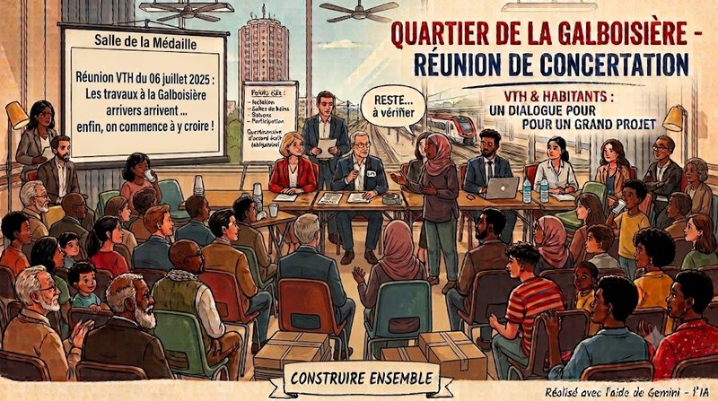

Hier soir, VTH avait organisé Salle de de la Médaille à 18 H une réunion d’information pour présenter le grand projet de réhabilitation de notre résidence.Bon… la convocation est arrivée tellement tard, le jeudi pour le lundi, qu’on aurait presque pu croire qu’elle avait voyagé en courrier économique à dos d’escargot. ? Malgré tout, une trentaine de familles avaient fait le déplacement.
Et il faut reconnaître une chose : chez VTH, ils n’avaient pas fait les choses à moitié. Le siège était bien représenté, avec la Direction, les techniciens, les équipes de l’agence et les agents d’immeuble. De quoi répondre directement aux nombreuses questions des habitants.
Une vraie volonté d’échanger
L’objectif était de présenter les futurs travaux et, cette fois, les échanges avec la salle ont été nombreux, francs et plutôt constructifs. Ça change des réunions où tout le monde regarde son téléphone en attendant les petits fours… qu’il n’y a pas eu d’ailleurs !
Selon ce qui a été annoncé (sous réserve d’avoir bien entendu, parce qu’oublier le micro dans une salle pleine, c’est un peu comme organiser un feu d’artifice dans le brouillard…), la prochaine étape consistera à recueillir l’accord écrit d’au moins la moitié des locataires, grâce à un questionnaire remis par VTH. Cette consultation est obligatoire.
À la demande de personnes présentes, le diaporama de présentation devrait être envoyé à l’ensemble des locataires. Une excellente idée : tout le monde n’a pas pu assister à la réunion et un document écrit évitera que les informations circulent de balcon en balcon, en prenant un peu d’embonpoint à chaque étage…
Les principaux travaux annoncés
Le programme présenté est ambitieux :
- Isolation thermique
- Réfection complète des façades
- Remplacement des balcons
- Rénovation totale des salles de bains
- Revalorisation du hall de la tour
…et probablement d’autres interventions qui seront précisées dans les documents à venir, fournis par VTH
Calendrier annoncé : de 2027 à 2030.
Oui… ça paraît encore loin.
Mais après toutes ces années à entendre « ça va venir », on a enfin l’impression que le train est entré en gare…. Et à la Galboisière les trains qui entre en gare, c’est notre quotidien…. Reste maintenant à vérifier qu’il ne repartira pas sans les voyageurs !
Loyers et charges
Toujours sous réserve d’une confirmation écrite, il a été indiqué que :
- les augmentations de loyers n’interviendraient qu’à la fin des travaux ;
- elles seraient de l’ordre de 20 %, avec une modulation selon l’ancienneté dans le logement. Les locataires arrivés récemment, déjà proches des loyers maximums, seraient moins concernés ;
- les charges pourraient diminuer d’environ 55 % ;
- chaque locataire recevrait une information personnalisée, indiquant son pourcentage d’augmentation ainsi que le montant brut correspondant.
Là aussi… attendons les documents officiels, mais ces annonces donnent déjà une première idée de ce qui est envisagé avec notamment un interlocuteur dédié et un questionnaire à venir et à remplir avec des adaptations possibles à la demande des locataires (sous réseve d’avor bien entendu et surtout que ces adaptations soient justifiées).
Les habitants ont aussi rappelé les réalités du quotidien
Parce qu’un immeuble, ce n’est pas seulement des façades neuves, plusieurs sujets ont été remis sur la table :
-
les déchets, les encombrants et les distributeurs de sacs pour les déjections canines ; et fait très appréciables on a parlé des responsables de la collecte et non des seules « personnes qui salissent – sic !».
-
le célèbre coin à déchets permanent au pied de la tour et de a station de relevage du chauffage. Celui-là, on pourrait presque le faire classer au patrimoine local tant il est fidèle au poste avec son coffre à tuyau de gaz en permanence ouvert qui devrait être « supprimé et l’ensemble « traité »
-
La disparition d’une partie des espaces verts situés derrière la barre, face à l’hôtel (section ZS- parcelle 0051 – source Géoportail) qui pose à minima question.
-
les cuisines, absentes du projet actuel, car moins prioritaires pour VTH, alors que beaucoup d’habitants souhaiteraient leur rénovation ;
-
Les installations électriques avec des prises et interrupteurs non harmonisés avec certains apparents très datés
-
la possibilité d’équiper les fenêtres qui ne le sont pas de volets ou de systèmes d’occultation ;
-
la nécessité de mobiliser davantage d’habitantes et d’habitants lors des prochaines concertations.
Parce qu’après… dire « je ne savais pas » quand les échafaudages sont déjà montés, c’est toujours un peu tard !
Petit bémol… le micro !
Une réunion sans micro, c’est un peu comme une télévision sans le son : on comprend l’histoire, mais on rate quelques dialogues.
En plus quand on parle dans le micro ça force le respect et en plus ça discipline celles et ceux qui veulent parler, et qui bon gré mal gré, attendent leurs tour.
Et comme je n’étais ni secrétaire de séance, ni greffier, ni champion de lecture sur les lèvres, ce compte rendu est forcément incomplet.
Cette fois… on y croit !
Cela faisait des années que l’on parlait de ces travaux.
Des années qu’ils étaient annoncés, reportés, repoussés, ré-annoncés…
À force, certains commençaient à penser qu’ils étaient rangés juste à côté du monstre du Loch Ness, du Yéti… ou de la promesse de faire un régime après les fêtes !
Cette fois, pourtant, quelque chose semble avoir changé.
- Les annonces sont plus précises.
- Le calendrier est posé.
- Les échanges ont eu lieu.
- Les prochaines étapes sont connues.
- Il reste bien sûr des questions, des confirmations écrites à attendre et un projet à suivre attentivement.
Mais, pour une fois, on repart avec le sentiment que les choses avancent vraiment.
Alors merci à VTH d’avoir organisé cette réunion, d’avoir répondu aux nombreuses questions et d’avoir engagé ce dialogue avec les habitants.
Maintenant… il n’y a plus qu’à transformer les annonces en échafaudages… puis les échafaudages en logements, barres et tours rénovés !
Allez… cette fois, on y croit.
Ça va le faire !
Saint-Pierre-des-Corps, le 7 juillet 2026
Abd-El-Kader AIT-MOHAMED
- Locataire de la Tour de la Galboisière et « Fier de l’être ».
- Membre du Comité populaire et néanmoins bienveillant de Vivre (surtout) Ensemble et (si possible) Solidaires en Métropole Tourangelle (VESEMT)
- Président de l’Association VESEMT
Commentaires